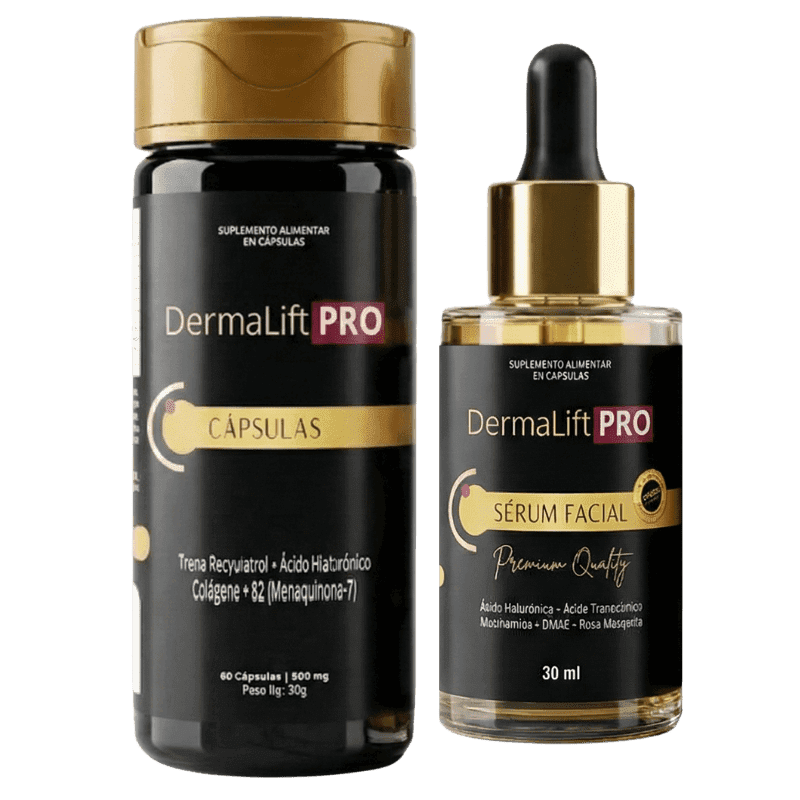
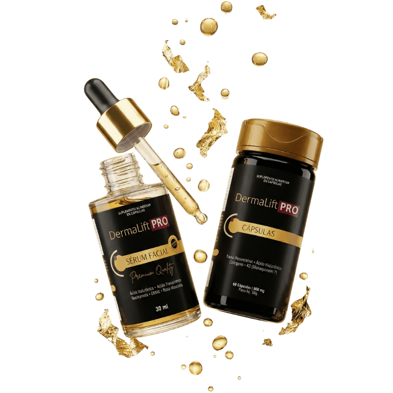
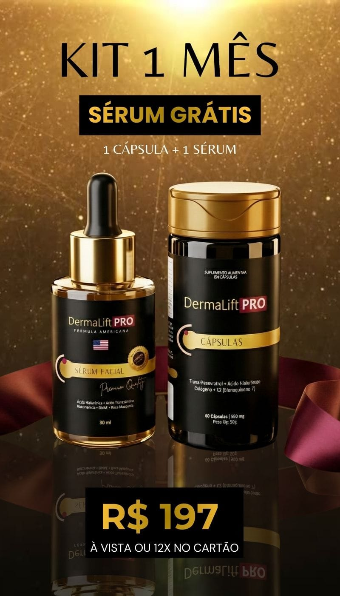
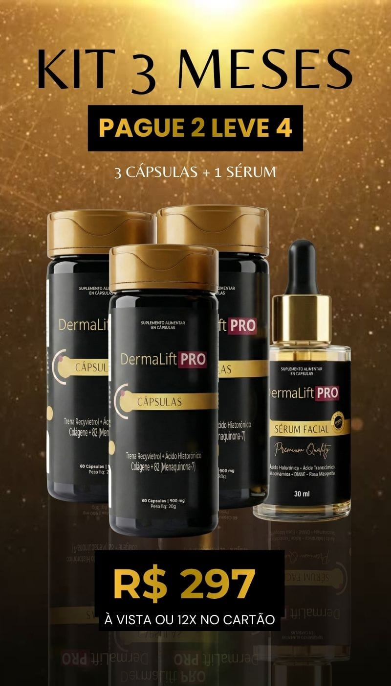

Seu cuidado diário.
Praticidade para fazer parte do seu dia.
Cápsulas + Sérum Facial. Dois cuidados que se encontram na sua rotina.
Ver kits e preços ↗Conheça a dupla DermaLift PRO: cápsulas para complementar a rotina e sérum para o seu momento de skincare.

Praticidade para fazer parte do seu dia.
Um toque de cuidado na sua rotina.
Entenda a proposta do DermaLift PRO e descubra como as cápsulas e o sérum facial podem fazer parte do seu dia a dia.
Assista à apresentação ↘2 MINUTOS PARA CONHECEREntre tantos compromissos, também existe espaço para você. Uma rotina bem escolhida começa com pequenos gestos que cabem no seu dia.
Dois produtos com papéis claros na sua rotina de cuidado.
Um ritual pensado para acompanhar o seu dia a dia.
Uma pausa para transformar o cuidado em um momento seu.
DermaLift PRO Cápsulas reúne trans-resveratrol, ácido hialurônico, colágeno e vitamina K2 em uma opção prática para complementar seu cuidado diário.
Encontrar meu kit ↗O sérum facial completa a dupla com um cuidado tópico. Inclua esse momento no seu ritual de skincare, respeitando as orientações do produto.
Conhecer os kits completos ↗Organize um momento para o uso, conforme as instruções do rótulo.
Aplique o sérum na pele conforme as orientações da embalagem.
Respeite sua pele, acompanhe sua rotina e procure orientação quando precisar.
Entenda o papel dos ingredientes e conheça melhor o cuidado que você está escolhendo. Cápsulas e sérum têm formas de uso distintas e se encontram na sua rotina.

Composto de origem vegetal estudado por sua atividade antioxidante, relacionada aos radicais livres. Faz parte da composição das cápsulas e da proposta de complementar sua rotina de cuidado.
Conhecido por sua capacidade de reter água. Em fórmulas tópicas, ajuda a manter a hidratação e a sensação de maciez da pele. Está presente nas cápsulas e no sérum, com formas de uso diferentes.
O colágeno é uma proteína que participa da sustentação da pele e de outros tecidos. Sua presença nas cápsulas complementa a composição; os efeitos da suplementação dependem da dose, da formulação e de cada pessoa.
Uma das formas da vitamina K, nutriente envolvido na coagulação normal do sangue e no metabolismo dos ossos. Integra a composição nutricional das cápsulas, sem substituir uma alimentação equilibrada.
Forma da vitamina B3 valorizada no skincare. Em formulações tópicas, pode ajudar a fortalecer a barreira da pele e melhorar a aparência do tom irregular, favorecendo um aspecto mais uniforme e bem cuidado.
O óleo de rosa mosqueta contém ácidos graxos, como o linoleico e o linolênico. É utilizado em cosméticos como ingrediente emoliente, que ajuda a deixar a pele com uma sensação mais macia e confortável.
As descrições apresentam características gerais dos ingredientes, não resultados comprovados para esta fórmula. Os efeitos dependem da concentração, da formulação e do uso. Consulte a composição e as orientações completas nos rótulos.
Escolha o tempo de rotina que combina com o seu momento.
Para conhecer a rotina.

Escolher 1 mês ↗Para dar continuidade ao cuidado.

Escolher 3 meses ↗Para planejar sua rotina por mais tempo.
Escolher 6 meses ↗Confira o valor final, o frete e as condições de pagamento no checkout.
Precisa de ajuda para escolher?
Converse com nosso atendimento.
Os kits estão organizados por 1, 3 e 6 meses. Compare as imagens das ofertas e confira a quantidade de produtos e o valor final no checkout antes de concluir sua compra.
Siga as instruções do rótulo de cada produto. Em caso de dúvida sobre o uso ou a combinação com outros produtos, consulte um profissional de saúde.
Escolha um dos kits para acessar o checkout da Braip. Lá você pode conferir as formas de pagamento disponíveis, informar seu endereço e revisar o pedido.
Confira as condições de entrega, garantia e devolução apresentadas na oferta e no checkout. Se precisar de esclarecimentos antes da compra, entre em contato pelo WhatsApp.
Cápsulas + Sérum Facial